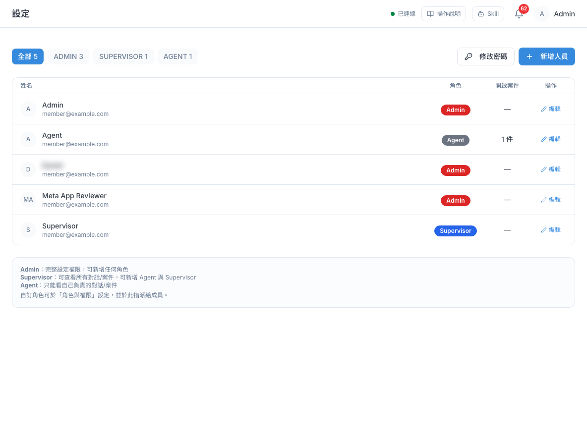
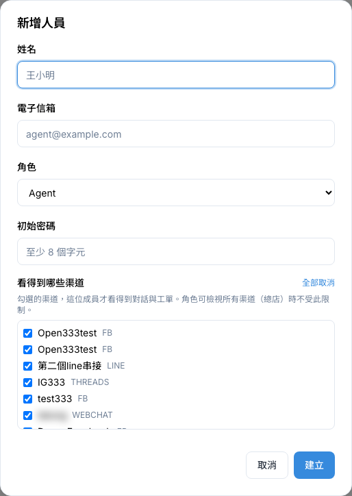
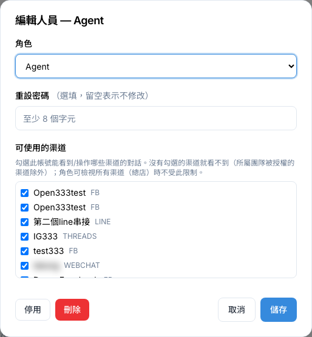
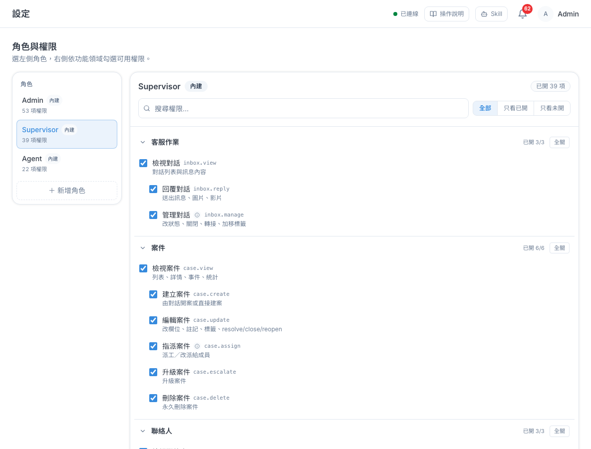
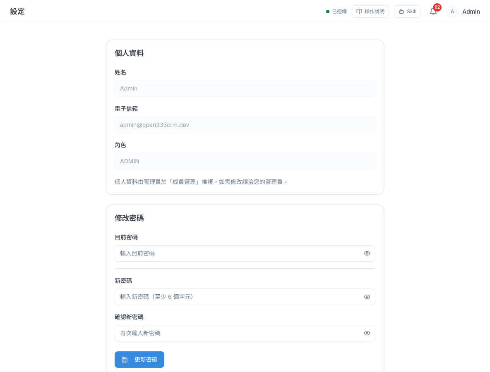
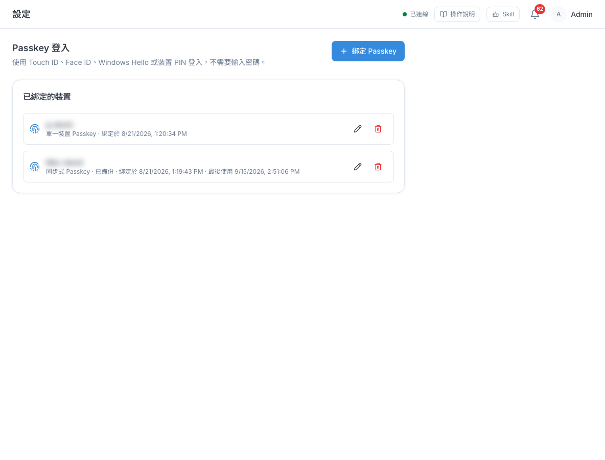

人員、角色與權限
幫同事開帳號、決定每個人能做哪些事、看得到哪些渠道；也教你修改自己的密碼，以及設定用指紋或臉部辨識登入。
1 這頁能做什麼
這一章的功能都在左側選單「分析與管理 → 設定」底下。「人員管理」和「角色與權限」通常是管理員在用；「一般設定」和「Passkey 登入」則是每個人管理自己帳號的地方，所有人都用得到。
2 三個預設角色能做什麼
每位成員都會被指派一個「角色」，角色決定他能做哪些事。系統內建三個角色，畫面上顯示英文名稱：Admin（管理員）、Supervisor（主管）、Agent（客服）。下表是系統預設的分工，你的公司可能已經調整過，實際以「角色與權限」頁的勾選為準（見第 7 節）。
| 常見工作 | 管理員 | 主管 | 客服 |
|---|---|---|---|
| 看對話、回覆客人、轉接、結束對話 | 可以 | 可以 | 可以 |
| 建立、編輯、指派、升級工單 | 可以 | 可以 | 可以 |
| 刪除工單 | 可以 | 可以 | 可以 |
| 查看、編輯、合併聯絡人 | 可以 | 可以 | 可以 |
| 新增、修改、刪除標籤 | 可以 | 可以 | 可以 |
| 編寫知識庫文章 | 可以 | 可以 | 可以 |
| 建立短連結 | 可以 | 可以 | 可以 |
| 看自己的績效 | 可以 | 可以 | 可以 |
| 看報表總覽、匯出報表 | 可以 | 可以 | — |
| 行銷活動、廣播、素材庫 | 可以 | 可以 | — |
| LINE 圖文選單、快速回覆 | 可以 | 可以 | — |
| 查看自動化規則 | 可以 | 可以 | — |
| 建立、修改自動化規則 | 可以 | — | — |
| 粉絲活動 | 可以 | — | — |
| SLA、營業時間、追蹤、跨渠道綁定、方案與帳務等設定 | 可以 | 可以 | — |
| 新增人員、幫人換角色 | 可以 | 可以（只能給不高於自己的角色） | — |
| 重設別人密碼、停用或刪除人員、指定人員看得到的渠道 | 可以 | — | — |
| 新增、編輯、刪除渠道 | 可以 | — | — |
| 調整角色與權限 | 可以 | — | — |
| 看得到哪些渠道的對話與工單 | 全部渠道 | 只看得到被勾選的渠道（見第 4 節） | |
3 人員列表
「設定 → 人員管理」列出公司裡所有啟用中的成員，看得到每個人的角色和手上的工單數。

| 畫面上的欄位 | 說明 |
|---|---|
| 全部／ADMIN／SUPERVISOR／AGENT | 依角色篩選，數字是人數。被指派自訂角色的人，會被算進他原本的內建角色那一類 |
| 姓名 | 姓名與登入用的電子信箱 |
| 角色 | 目前的角色；自訂角色會顯示自訂的名稱 |
| 開啟案件 | 指派給他的工單數。目前已結案的工單也算在內，所以數字可能比實際處理中的多 |
| 操作 | 「編輯」：換角色、重設密碼、調整渠道、停用或刪除 |
4 新增人員
有新同事加入時，在這裡幫他開帳號。管理員與主管都可以新增人員。
- 到「設定 → 人員管理」，按右上「新增人員」。
- 填「姓名」和「電子信箱」。電子信箱就是他的登入帳號。
- 在「角色」選一個角色（預設是 Agent）。
- 填「初始密碼」，至少 8 個字。建立後請把密碼私下告訴他，並請他登入後到「一般設定」改成自己的密碼。
- 在「看得到哪些渠道」勾選他負責的渠道（預設全部勾選）。
- 確認無誤後按「建立」。

「看得到哪些渠道」是什麼意思
如果你的公司有好幾個 LINE 官方帳號、粉專（例如總店與各分店各一個），可以用這個清單讓同事只看到自己負責的渠道。勾了的渠道，他才看得到該渠道的對話與工單；沒勾的就完全看不到。
- 例：台中分店的客服只勾「台中店 LINE」，他就不會看到台北店客人的訊息。
- 角色若有「檢視所有渠道（總店）」權限（預設只有管理員有），不受這個清單限制，一律看得到全部。
- 如果全部取消勾選，畫面會出現「只有總店…看得到」的提示，意思是：這位同事什麼渠道都看不到。
Amy@Example.com，同事用小寫登入會失敗。5 編輯人員
同事換職務、忘記密碼、或負責的渠道改變時，在這裡調整。
- 在人員列表找到那位同事，按他那列最右邊的「編輯」。
- 要換角色：在「角色」下拉選新的角色。
- 同事忘記密碼：在「重設密碼」填一組新密碼（至少 8 個字）。不改密碼就留空。
- 調整他負責的渠道：在「可使用的渠道」勾選或取消。
- 按「儲存」。

6 停用與刪除人員
同事離職或不再使用帳號時，在「編輯」對話框左下角有兩個按鈕。只有管理員看得到。
| 按鈕 | 結果 |
|---|---|
| 停用 | 他無法登入，電子信箱仍被這個帳號佔著，不能再拿來開新帳號。之後可以重新啟用 |
| 刪除 | 永久刪除帳號、釋放電子信箱（可以再用同一個信箱開帳號）。他經手的對話與工單會解除指派，歷史紀錄保留。無法復原 |
停用同事
- 在人員列表那位同事那列按「編輯」。
- 按左下角「停用」，確認視窗按「確定」。
- 他會從上方的人員列表移到頁面下方的「已停用的人員」區塊。
重新啟用
同事回來上班、或停用錯人時，可以把帳號找回來。
- 到「設定 → 人員管理」，往下捲到「已停用的人員」區塊（有停用的人才會出現）。
- 在那位同事那列按「重新啟用」。
- 他會回到上方的人員列表，用原本的帳號密碼登入，角色維持停用前的設定。
- 同事只是暫時不用（例如請長假），用「停用」就好，之後隨時能重新啟用。
- 確定離職、想把電子信箱釋放出來另作他用，請用「刪除」。已停用的人也能在「已停用的人員」那列按「編輯」，再按左下角「刪除」。
7 角色與權限
這頁決定每個角色能做哪些事，也可以建立「客服組長」「行銷專員」這類自訂角色。預設只有管理員看得到這頁。

查看或調整角色權限
- 到「設定 → 角色與權限」，在左邊點一個角色。
- 右邊依「客服作業」「案件」「聯絡人」等功能分組列出權限。打勾代表有這項權限。
- 權限很多時，可以在「搜尋權限…」輸入關鍵字，或按「只看已開」「只看未開」篩選。
- 勾選或取消後，頁面底部會出現「未儲存 N 項變更」。按「儲存變更」生效；改錯了按「放棄」。
- 有些權限要先有另一項才能用，例如要「回覆對話」得先能「檢視對話」。你勾後面那項，前面那項會自動勾起來，並標示「自動開啟」。
- Admin 角色有幾項標「內建鎖定」的權限不能取消，避免公司沒有人能管理帳號。
- 每項權限旁邊會顯示一小段英文代碼與說明，那是給技術人員對照用的，看中文名稱就好。
建立自訂角色
- 按左側最下方「＋ 新增角色」。
- 在「角色名稱」輸入名稱（最多 20 字，例如「客服組長」），按「建立並設定權限」。
- 新角色一開始什麼權限都沒有。在右邊勾選它可用的權限，按「儲存變更」。
- 回到「人員管理」，編輯成員，在「角色」選這個新角色（會顯示為「名稱（自訂）」）。
自訂角色可以改名或刪除：把滑鼠移到左邊的自訂角色上，會出現鉛筆（改名）和垃圾桶（刪除）圖示。
8 我的帳號與修改密碼
「設定 → 一般設定」是你自己的帳號頁，每個人都能用。上方「個人資料」顯示你的姓名、電子信箱與角色，這些由管理員維護，自己不能改；下方可以修改自己的登入密碼。
- 到「設定 → 一般設定」。
- 在「修改密碼」填「目前密碼」。
- 填「新密碼」和「確認新密碼」，兩次要一樣，而且至少 8 個字、不能跟目前密碼相同。欄位右邊的眼睛圖示可以顯示或隱藏你打的字。
- 按「更新密碼」，按鈕變成「密碼已更新」就完成了。

人員管理頁右上角的「修改密碼」按鈕也能改自己的密碼，但那裡沒有「確認新密碼」欄，建議用一般設定這頁比較不會打錯。忘記自己的密碼時，請管理員用編輯人員的「重設密碼」幫你設一組新的。
9 Passkey 免密碼登入
Passkey 讓你用電腦或手機的 Touch ID、Face ID、Windows Hello 或裝置 PIN 碼登入，不用每次輸入密碼。每個人只能管理自己的 Passkey。
綁定這台裝置
- 用你平常登入的那台電腦或手機，到「設定 → Passkey 登入」。
- 按「綁定 Passkey」。
- 在「裝置名稱」取一個好認的名字，例如「公司筆電」「我的 iPhone」（最多 80 字），按「繼續綁定」。
- 電腦或手機會跳出指紋、臉部或 PIN 碼驗證，照指示完成。
- 完成後，這台裝置會出現在「已綁定的裝置」清單。

用 Passkey 登入
登入頁會多一個「使用 Passkey 登入」按鈕。按下去後完成裝置驗證，就能直接進入系統。
管理已綁定的裝置
- 「同步式 Passkey」會透過 Apple、Google 等帳號同步到你的其他裝置；「單一裝置 Passkey」只存在那一台。「已備份」表示有雲端備份，換手機也不會遺失。
- 鉛筆圖示：改裝置名稱。
- 垃圾桶圖示：撤銷。電腦遺失或不再使用時請撤銷，撤銷後那台裝置就不能再用 Passkey 登入。